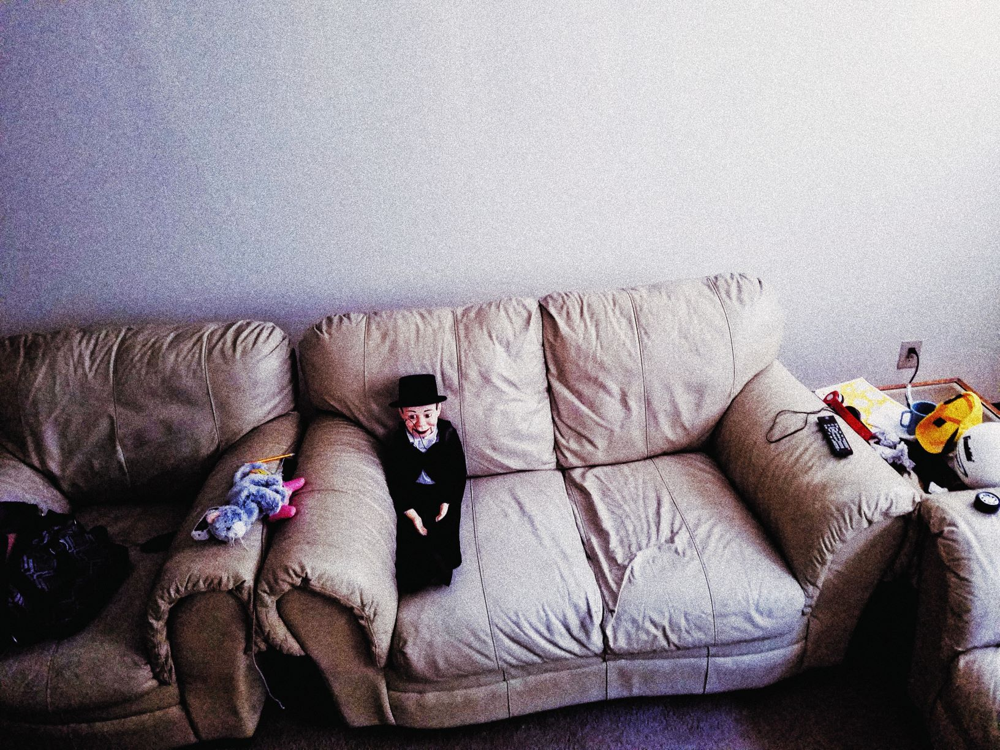

Creative Technologies Program (CTK): The Courses

Don't CallCTK Vinnie a Dummy!
Creative Teachnologies Courses
201 BASIC SKILLS IN THE DIGITAL ARTS
Introduction to the conceptual and technical skills required to capture, edit, and create digital graphics, audio, and video imagery. Prerequisite: Fine Arts major/minor or consent instructor.
240 SOUND DESIGN 1: BEGINNING DIGITAL AUDIO
Introduction to digital audio and aesthetic principles of sound. Prerequisite: Creative Technologies major or consent of the instructor.
260 CREATIVE TECHNOLOGIES PERFORMANCE STUDIO
Creative and interdisciplinary experiences in solo and ensemble performance integrating computer technology into music, dance, performance art, or theatre production. Prerequisite: Consent of the instructor.
300 COMPUTER ARTS APPLICATIONS
Variable topic course that focuses on the application of computer software to solving studio, performance, and production problems in the arts. Multiple enrollments are allowed if content is different. Prerequisite: Consent of the instructor.
301 WEB DESIGN AND DEVELOPMENT
Theory, technical skills, and design concepts for the creation of standards-compliant web sites.
302 COMPUTER PROGRAMMING FOR CREATIVES
Text-based, object-oriented, computer programming concepts for areas including interactive design, user interfaces, data visualization, and gaming. Prerequisite: Creative Technologies major or consent of the instructor or graduate standing.
320 PROGRAMMING DYNAMIC MEDIA
Programming concepts using a graphical, dataflow environment for media-based performance, interactive installation, and generative art/sound. Prerequisite: Creative Technologies major or consent of the instructor or graduate standing.
330 WEB VIDEO
Students will learn technical skills and concepts for the creation of fictional and documentary video content specifically for delivery on the web.
340 SOUND DESIGN 2: ADVANCED DIGITAL AUDIO
Advanced digital audio and aesthetic principles of sound. Prerequisites: Creative Technologies major, CTK 240, or consent of the instructor or graduate standing.
345 SEQUENCING AND DIGITAL AUDIO
Study of music synthesis through MIDI sequencers, digital sound editing and recording, and the integration of digital audio and MIDI. Prerequisite: Consent of the instructor or graduate standing.
351 GAME DESIGN I
This foundational game design class explores concepts and frameworks for understanding and designing for engagement, fun, and motivation in games.
352 GAME DESIGN II
This game design course focuses on designing the content flow of a game such as levels, pacing, goals, and game-worlds.
353 GAME DEVELOPMENT
This foundational game development class focuses on digital game production with Unity and industry processes specifically relating to digital games.
354 USER EXPERIENCE DESIGN FOR GAMES
This course explores common trends concerning interface design in gaming for understanding how they influence a user's overall experience of a game.
355 GAME STUDIO CAPSTONE
Year-long capstone experience where students collaborate and create digital games from ideation to production.
356 EXPERIMENTAL TECHNOLOGIES FOR GAMES
This course focuses on emerging and non-traditional outlets and controls for games such as AR-VR-XR, motion control, eye tracking, etc.
357 BUSINESS OF GAMES AND ESPORTS
This course prepares students for self-employed and/or employed careers in the fields of game design, development, and e-sports.
358 ANALYTICS AND USER STUDIES FOR GAMES
This course covers the basics of user-oriented Human-Computer Interaction (HCI) evaluation, methodologies, and analysis, through the lens of games and virtual worlds.
359 GAMES AND SOCIETY
This course provides historical and cultural perspectives on games and other forms of playful artifacts and their effects on society.
370 PORTFOLIO DEVELOPMENT
Preparation for entry into the job market and/or artistic practice with an emphasis on portfolio preparation and presentation, and career counseling.
377 MOTION GRAPHICS
Create motion graphics with compositing, animation, and visual effects (VFX) for broadcast, web, virtual and augmented reality, with focus on community engagement.
380 SELECTED TOPICS IN CREATIVE TECHNOLOGIES
Varied emphases reflecting integration of computers with digital sound/graphic technologies and authoring tools for applications in the arts. Multiple enrollments are allowed if content is different.
390 DIRECTED PROJECTS/SEMINAR IN CREATIVE TECHNOLOGIES
Pursuit of individualized creative projects in Creative Technologies. May include periodic critiques with other students pursuing directed projects. Multiple enrollments are allowed for a maximum of 6 hours. Prerequisite: Consent of the instructor.
398 PROFESSIONAL PRACTICE: COOPERATIVE EDUCATION/INTERNSHIP IN ARTS MICRO COMPUTER APPLICATIONS
Internship providing the opportunity to apply knowledge of creative technologies in arts agencies, business and/or education settings. Prerequisites: CTK 201; 1 course selected from CTK 301; MUS 211; or ART 371 or THE 360. Junior/senior standing in area of concentration; 2.50 G.P.A.